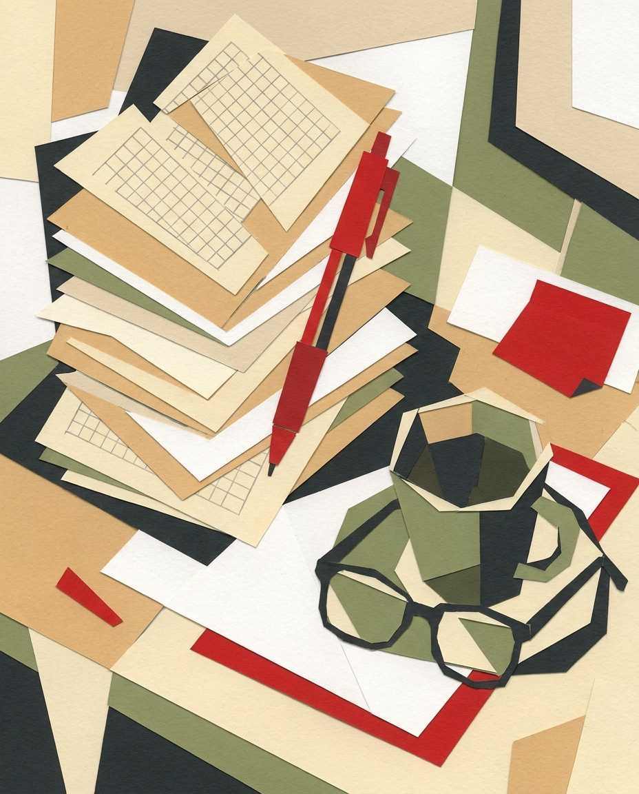

Codex Punane Pastakas · Folio I Matemaatika · Eesti õpetajatele
Vähem
punast
tinti.
Hindamise abiline Eesti matemaatikaõpetajatele. Masin koostab mustandi, märgib ja selgitab — sina kinnitad iga hinde.

Folio II · Õpetaja õhtu anatoomia
~0
tundi parandamist aastas
tähelepanek a
Kümme täis töönädalat
— punane pastakas käes, õpetamise kõrvalt.
tähelepanek b
Suuresti tasustamata õhtutöö
— virn rändab koju ja nädalavahetusse.
tähelepanek c
Õpilane saab ühe numbri
— harva päris, ülesandepõhist tagasisidet.
Näitlikud andmed · piloot käimas
Folio III · Masina ehitus
Neli mehhanismi, üks põhimõte: otsus jääb inimesele
-
Imehhanism
Loo töö
Pealkiri ja soovi korral punktiskeem. Kaks minutit.
sisend: kavatsus
-
IImehhanism
Lae üles tööd
Pildid või PDF — terve klass korraga. Nimed tuvastatakse, sina kinnitad.
sisend: paber
-
IIImehhanism
Sünnib mustand
Transkriptsioon, punktid, kus ja miks viga tekkis — iga ülesanne.
väljund: mustand
-
IVmehhanism
Vaata üle ja kinnita
Muuda, kinnita, jaga õpilasega. Iga hinne käib sinu käest läbi.
väljund: otsus — sinu oma
Folio IV · Mõõdud
0×
vähemalt nii palju kiirem parandamine
0%
hinnetest kinnitab õpetaja
Põhjalikum tagasiside
igale õpilasele, igale ülesandele
Näitlikud andmed — avaldame piloodi päris tulemused.
PP
MTÜ
Folio V · Leping
Kirjuta end koodeksisse — võta oma õhtud tagasi.
Liitu ootenimekirjaga — otsime piloodiõpetajaid üle Eesti.
Me ei jaga su aadressi. Saad end igal ajal nimekirjast eemaldada.